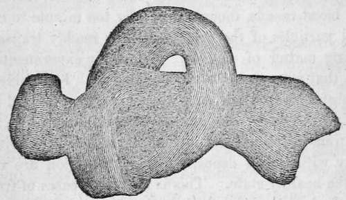
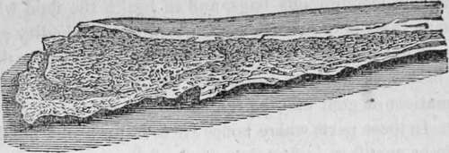
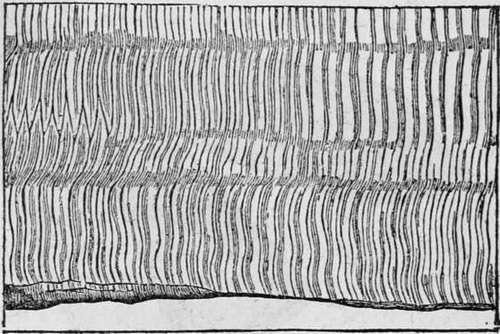

Structure Of The Human Body Continued. Part 3
Description
This section is from the book "Human Physiology For The Use Of Elementary Schools", by Charles Alfred Lee. Also available from Amazon: Human Physiology, for the Use of Elementary Schools.
Structure Of The Human Body Continued. Part 3
18. Chemical examination shows that bone is composed of earthy and animal matter, the former constituting about two thirds, the remaining one third being animal matter. As we find portions of both these substances in the minutest particles of bones, both are therefore considered essential to its composition, and existing in a state of chemical union, and not as a mere mechanical mixture. These two substances can be readily separated from each other. If we immerse bones for some time in diluted nitric acid, or muriatic acid, though they retain their size and form, their weight is considerably diminished, and they are rendered soft, pliable, and elastic. The earthy portion, phosphate of lime, has been dissolved, and is held in solution in the fluid, and the animal portion, gelatine, remains uninjured.
Membranous, or gelatinous portion of bone ; the earthy portion being 60 completely removed, that it is capable of being tied in a knot.
19. If bones are subjected to a strong heat, as in a charcoal fire, on cooling they appear to have undergone no alteration in figure or bulk; but they are rendered white as chalk ; their weight is lessened, and they become very brittle. In this case, the animal matter has been wholly consumed by the fire, while the earthy part remains unchanged ; in the former case, the very reverse happened; the animal matter remaining, and the earthy being removed.
Earthy portion of bone.
20. The proportion between the animal and earthy substances varies in different individuals, and in the same individual at different periods of life, and under various conditions of health. In youth, the former, in old age, the latter predominates. The earthy matter is sometimes so deficient that the bones have not the necessary degree of firmness and rigidity. The consequence is, that those parts of the skeleton which have to support any considerable weight bend under it, as the spine, the bones of the pelvis, and the lower limbs. This is one cause of spinal distortions, though they are generally caused by debility of the muscles from want of proper exercise. In many cases of the former kind, by the subsequent deposition of earthy matter, the bones become sufficiently dense and compact; but the distortion remains fixed and permanent, and mechanical means, such as pulleys, screws, inclined planes, etc, only serve to torture the patient, without affording the slightest prospect of a cure. No one who understands physiology will attempt to correct such distortions by mechanical means. Where there is a deficiency of animal matter, the bones want a poper degree of tenacity, and are therefore easily fractured by slight blows or falls.
21. The ends of the bones which are used for motion, as already mentioned, are tipped with cartilage or gristle, which is very smooth and hard ; and it is constantly wet, in a state of health, by a fluid which answers the same purpose as oil in machinery, or tar upon wagon wheels. The joints are enclosed in membranous bags, and in health the fluid which moistens them is of just the right quantity and quality ; but if we do not take proper exercise, or if we take food or drink that is too heating or irritating, the joints grow stiff, or rheumatism or gout may be the consequence.
22. In those parts where bones are to be formed, a mould of gristle or cartilage is first deposited, of the exact shape that the future bone is to take ; and as bony particles are secret, ed by the blood, the cartilage is taken up by the absorbent vessels. In the long round bones, this process begins in the middle, and in the flat bones, like the shoulder blade, or those of the skull, it begins in the centre and extends gradually towards the circumference. But in the skull, all the bones are not completely formed, till several months after birth.
23. The bones are variously connected by joints or articulations, which admit of different degrees of motion, both in extent and variety. Some of these connections allow free, easy, and conspicuous motion, as the shoulder and hip joints, which are called ball and socket joints ; in others, there is motion in only two directions, as the knee, elbow, wrist, and ankle. These are called hinge joints, from their resemblance to a hinge. Some bones, like those of the skull, though connected by a kind of articulation, are nevertheless immoveable.
24. Another form of animal matter, differing essentially from those we have been considering is, muscular tissue. This is familiar to all under the name of flesh. It is a substance of a peculiar nature, arranged in fibres of extreme delicacy. It is distinguished from every other texture in the body, by an innate power of contraction ; on examining it with microscopes of great magnifying power, it is found to be composed of filaments so fine as the one forty thousandth part of an inch in diameter. These filaments collected together, form fibres, which are plainly perceptible in boiled flesh. A collection of these fibres form a bundle, and these bundles collectively constitute a muscle; and muscles appear coarse or fine according to the size of these bundles.
25. These fibres appear to be very uniform as to shape, size, and general appearance, being delicate, soft, flattened, and though consisting only of a tender pulp, still solid. The fibrous and fascicular arrangement appears to be chiefly confined to muscles of voluntary action, as they are scarcely perceptible in the heart, and not at all in the alimentary canal, or urinary bladder. In the stomachs of birds, however, the fibrous structure is very distinct, especially in hawks and owls.
The appearance of the ultimate fibres and of their transverse lines, as seen under the microscope of Mr. Lister, when the object is magnified 500 diameters.
Continue to:
- prev: Structure Of The Human Body Continued. Part 2
- Table of Contents
- next: Structure Of The Human Body Continued. Part 4
Tags
humans, anatomy, skeleton, bones, physiology, organs, nerves, brain